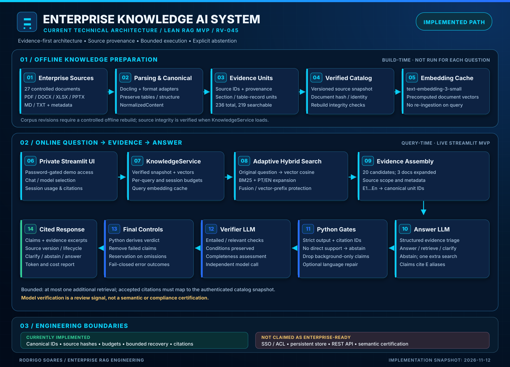

Architecture: current implemented lean MVP (RV-045), not a production certification. For contracts, provenance, invariants, limitations and exact components, see the technical architecture specification. The SVG is the editable vector source, intentionally aligned with the project's dark navy, blue and cyan visual identity.